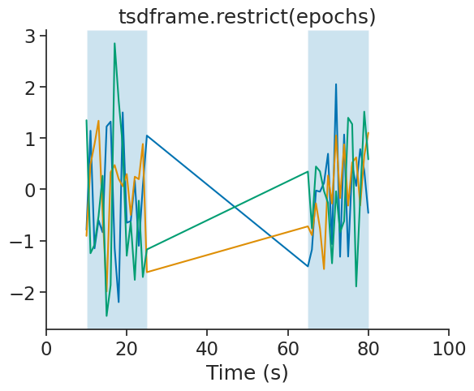
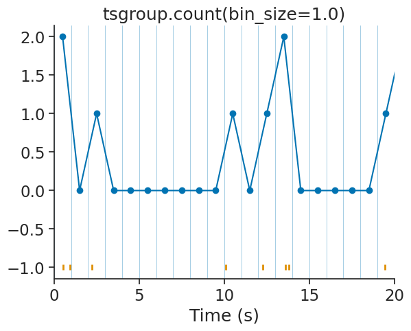
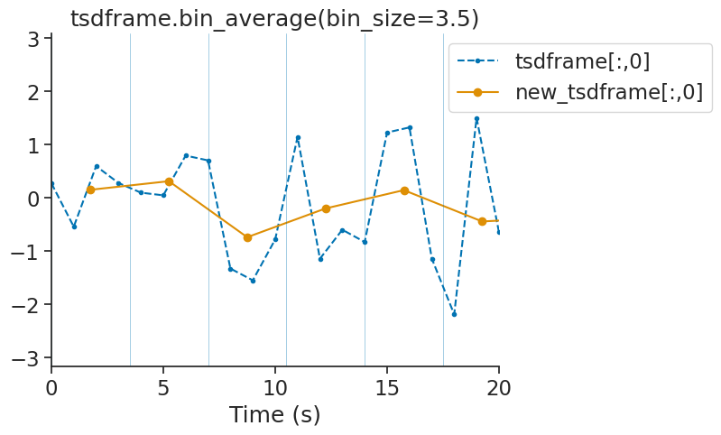
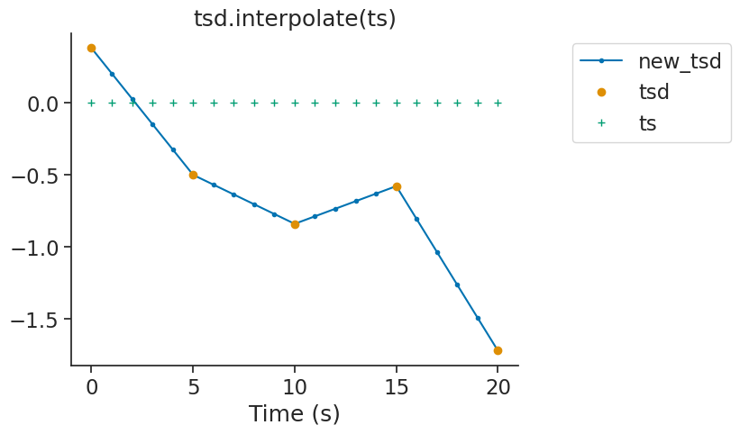
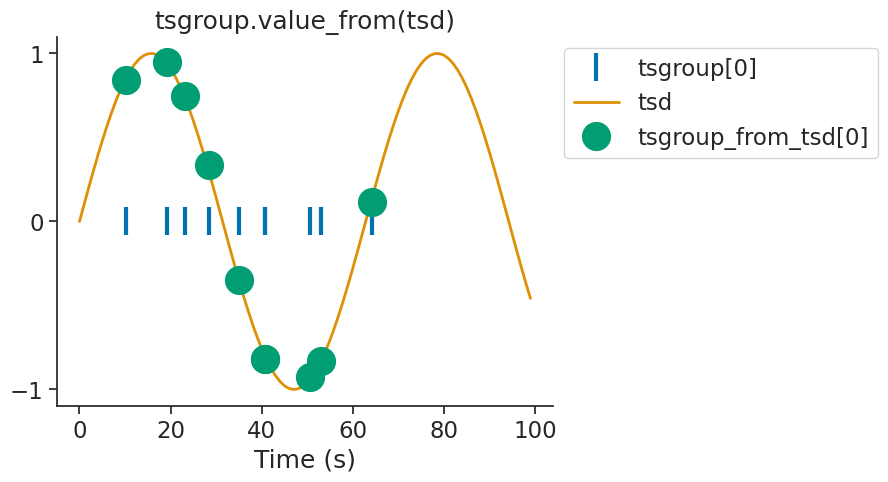
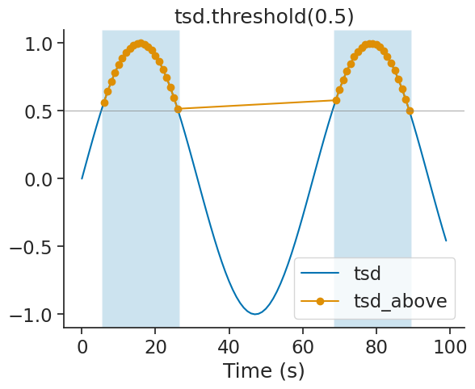
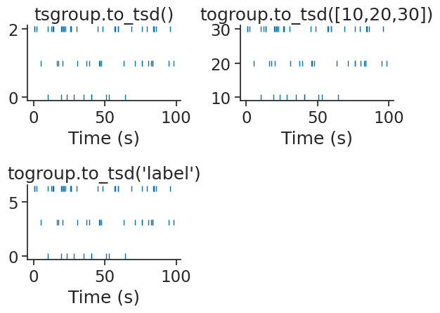

Core methods#
Show code cell content
import pynapple as nap
import numpy as np
import matplotlib.pyplot as plt
import seaborn as sns
custom_params = {"axes.spines.right": False, "axes.spines.top": False}
sns.set_theme(style="ticks", palette="colorblind", font_scale=1.5, rc=custom_params)
Interval sets methods#
Interaction between epochs#
epoch1 = nap.IntervalSet(start=0, end=10) # no time units passed. Default is us.
epoch2 = nap.IntervalSet(start=[5, 30], end=[20, 45])
print(epoch1, "\n")
print(epoch2, "\n")
start end
0 0 10
shape: (1, 2), time unit: sec.
start end
0 5 20
1 30 45
shape: (2, 2), time unit: sec.
union#
epoch = epoch1.union(epoch2)
print(epoch)
start end
0 0 20
1 30 45
shape: (2, 2), time unit: sec.
intersect#
epoch = epoch1.intersect(epoch2)
print(epoch)
start end
0 5 10
shape: (1, 2), time unit: sec.
set_diff#
epoch = epoch1.set_diff(epoch2)
print(epoch)
start end
0 0 5
shape: (1, 2), time unit: sec.
split#
Useful for chunking time series, the split method splits an IntervalSet in a new
IntervalSet based on the interval_size argument.
epoch = nap.IntervalSet(start=0, end=100)
print(epoch.split(10, time_units="s"))
start end
0 0 10
1 10 20
2 20 30
3 30 40
4 40 50
5 50 60
6 60 70
7 70 80
8 80 90
9 90 100
shape: (10, 2), time unit: sec.
Drop intervals#
epoch = nap.IntervalSet(start=[5, 30], end=[6, 45])
print(epoch)
start end
0 5 6
1 30 45
shape: (2, 2), time unit: sec.
drop_short_intervals#
print(
epoch.drop_short_intervals(threshold=5)
)
start end
0 30 45
shape: (1, 2), time unit: sec.
drop_long_intervals#
print(
epoch.drop_long_intervals(threshold=5)
)
start end
0 5 6
shape: (1, 2), time unit: sec.
merge_close_intervals#
Show code cell source
epoch = nap.IntervalSet(start=[1, 7], end=[6, 45])
print(epoch)
start end
0 1 6
1 7 45
shape: (2, 2), time unit: sec.
If two intervals are closer than the threshold argument, they are merged.
print(
epoch.merge_close_intervals(threshold=2.0)
)
start end
0 1 45
shape: (1, 2), time unit: sec.
Metadata#
One advantage of grouping time series is that metainformation can be added directly on an element-wise basis. In this case, we add labels to each Ts object when instantiating the group and after. We can then use this label to split the group. See the TsGroup documentation for a complete methodology for splitting TsGroup objects.
group = {
0: nap.Ts(t=np.sort(np.random.uniform(0, 100, 10))),
1: nap.Ts(t=np.sort(np.random.uniform(0, 100, 20))),
2: nap.Ts(t=np.sort(np.random.uniform(0, 100, 30))),
}
time_support = nap.IntervalSet(0, 100)
tsgroup = nap.TsGroup(group, time_support=time_support)
tsgroup['label1'] = np.random.randn(3)
tsgroup.set_info(label2 = ['a', 'b', 'c'])
print(tsgroup, "\n")
Index rate label1 label2
------- ------ -------- --------
0 0.1 -0.05509 a
1 0.2 0.99711 b
2 0.3 0.38547 c
Time series method#
Show code cell content
tsdframe = nap.TsdFrame(t=np.arange(100), d=np.random.randn(100, 3), columns=['a', 'b', 'c'])
epochs = nap.IntervalSet([10, 65], [25, 80])
tsd = nap.Tsd(t=np.arange(0, 100, 1), d=np.sin(np.arange(0, 10, 0.1)))
restrict#
restrict is used to get time points within an IntervalSet. This method is available
for TsGroup, Tsd, TsdFrame, TsdTensor and Ts objects.
tsdframe.restrict(epochs)
Time (s) a b c
---------- -------- -------- --------
10.0 -0.78749 -0.90524 1.3466
11.0 1.14145 0.48814 -1.24338
12.0 -1.14851 0.88106 -1.07989
13.0 -0.60367 1.33649 -0.52066
14.0 -0.83425 -0.45509 0.26445
15.0 1.22421 -1.98783 -2.464
16.0 1.31966 0.33348 -1.8638
...
74.0 1.06773 0.87631 -0.61873
75.0 -1.30728 -0.31569 1.39433
76.0 0.46737 0.52189 1.27068
77.0 0.06838 0.62254 -1.88964
78.0 0.78385 -0.31235 -0.15007
79.0 0.36621 0.65656 1.51373
80.0 -0.45792 1.10191 0.58595
dtype: float64, shape: (32, 3)
Show code cell source
plt.figure()
plt.plot(tsdframe.restrict(epochs))
[plt.axvspan(s, e, alpha=0.2) for s, e in epochs.values]
plt.xlabel("Time (s)")
plt.title("tsdframe.restrict(epochs)")
plt.xlim(0, 100)
plt.show()

This operation update the time support attribute accordingly.
print(epochs)
print(tsdframe.restrict(epochs).time_support)
start end
0 10 25
1 65 80
shape: (2, 2), time unit: sec.
start end
0 10 25
1 65 80
shape: (2, 2), time unit: sec.
count#
count the number of timestamps within bins or epochs of an IntervalSet object.
This method is available for TsGroup, Tsd, TsdFrame, TsdTensor and Ts objects.
With a defined bin size:
count1 = tsgroup.count(bin_size=1.0, time_units='s')
print(count1)
Time (s) 0 1 2
---------- --- --- ---
0.5 0 0 2
1.5 0 0 0
2.5 0 0 1
3.5 0 0 0
4.5 0 0 0
5.5 0 1 0
6.5 0 0 0
...
93.5 0 0 0
94.5 0 1 0
95.5 0 0 1
96.5 0 0 0
97.5 0 0 0
98.5 0 1 0
99.5 0 0 0
dtype: float64, shape: (100, 3)
Show code cell source
plt.figure()
plt.plot(count1[:,2], 'o-')
plt.title("tsgroup.count(bin_size=1.0)")
plt.plot(tsgroup[2].fillna(-1), '|', markeredgewidth=2)
[plt.axvline(t, linewidth=0.5, alpha=0.5) for t in np.arange(0, 21)]
plt.xlabel("Time (s)")
plt.xlim(0, 20)
plt.show()

With an IntervalSet:
count_ep = tsgroup.count(ep=epochs)
print(count_ep)
Time (s) 0 1 2
---------- --- --- ---
17.5 3 3 9
72.5 0 3 3
dtype: float64, shape: (2, 3)
bin_average#
bin_average downsample time series by averaging data point falling within a bin.
This method is available for Tsd, TsdFrame and TsdTensor.
tsdframe.bin_average(3.5)
Time (s) a b c
---------- -------- -------- --------
1.75 0.14767 0.36745 0.12024
5.25 0.30904 0.45357 -0.53916
8.75 -0.74404 -0.39076 0.34273
12.25 -0.20358 0.9019 -0.94798
15.75 0.14074 -0.40903 -0.30499
19.25 -0.44825 0.18826 0.42792
22.75 -0.37073 0.20838 -1.08174
...
75.25 0.07594 0.36084 0.68209
78.75 0.19013 0.51717 0.015
82.25 -0.34236 -0.56249 0.08065
85.75 0.377 0.27754 0.42522
89.25 0.33333 -0.16821 -0.36059
92.75 -0.6188 0.03629 0.34206
96.25 -1.57796 -0.54411 -0.76059
dtype: float64, shape: (28, 3)
Show code cell source
bin_size = 3.5
plt.figure()
plt.plot(tsdframe[:,0], '.--', label="tsdframe[:,0]")
plt.plot(tsdframe[:,0].bin_average(bin_size), 'o-', label="new_tsdframe[:,0]")
plt.title(f"tsdframe.bin_average(bin_size={bin_size})")
[plt.axvline(t, linewidth=0.5, alpha=0.5) for t in np.arange(0, 21,bin_size)]
plt.xlabel("Time (s)")
plt.xlim(0, 20)
plt.legend(bbox_to_anchor=(1.0, 0.5, 0.5, 0.5))
plt.show()

interpolate#
Theinterpolate method of Tsd, TsdFrame and TsdTensor can be used to fill gaps in a time series. It is a wrapper of numpy.interp.
Show code cell content
tsd = nap.Tsd(t=np.arange(0, 25, 5), d=np.random.randn(5))
ts = nap.Ts(t=np.arange(0, 21, 1))
new_tsd = tsd.interpolate(ts)
Show code cell source
plt.figure()
plt.plot(new_tsd, '.-', label="new_tsd")
plt.plot(tsd, 'o', label="tsd")
plt.plot(ts.fillna(0), '+', label="ts")
plt.title("tsd.interpolate(ts)")
plt.xlabel("Time (s)")
plt.legend(bbox_to_anchor=(1.0, 0.5, 0.5, 0.5))
plt.show()

value_from#
value_from assign to every timestamps the closed value in time from another time series. Let’s define the time series we want to assign values from.
For every timestamps in tsgroup, we want to assign the closest value in time from tsd.
Show code cell content
tsd = nap.Tsd(t=np.arange(0, 100, 1), d=np.sin(np.arange(0, 10, 0.1)))
tsgroup_from_tsd = tsgroup.value_from(tsd)
We can display the first element of tsgroup and tsgroup_sin.
Show code cell source
plt.figure()
plt.plot(tsgroup[0].fillna(0), "|", label="tsgroup[0]", markersize=20, mew=3)
plt.plot(tsd, linewidth=2, label="tsd")
plt.plot(tsgroup_from_tsd[0], "o", label = "tsgroup_from_tsd[0]", markersize=20)
plt.title("tsgroup.value_from(tsd)")
plt.xlabel("Time (s)")
plt.yticks([-1, 0, 1])
plt.legend(bbox_to_anchor=(1.0, 0.5, 0.5, 0.5))
plt.show()

threshold#
The method threshold of Tsd returns a new Tsd with all the data above or
below a certain threshold. Default is above. The time support
of the new Tsd object get updated accordingly.
Show code cell content
tsd = nap.Tsd(t=np.arange(0, 100, 1), d=np.sin(np.arange(0, 10, 0.1)))
tsd_above = tsd.threshold(0.5, method='above')
This method can be used to isolate epochs for which a signal is above/below a certain threshold.
epoch_above = tsd_above.time_support
Show code cell source
plt.figure()
plt.plot(tsd, label="tsd")
plt.plot(tsd_above, 'o-', label="tsd_above")
[plt.axvspan(s, e, alpha=0.2) for s, e in epoch_above.values]
plt.axhline(0.5, linewidth=0.5, color='grey')
plt.legend()
plt.xlabel("Time (s)")
plt.title("tsd.threshold(0.5)")
plt.show()

Mapping between TsGroup and Tsd#
It’s is possible to transform a TsGroup to Tsd with the method
to_tsd and a Tsd to TsGroup with the method to_tsgroup.
This is useful to flatten the activity of a population in a single array.
tsd = tsgroup.to_tsd()
print(tsd)
Time (s)
------------ --
0.535359893 2
0.926686452 2
2.244060308 2
5.102834248 1
10.105588405 2
10.231990352 0
12.268451674 2
...
83.785227579 2
84.37187825 2
84.619942809 2
86.025870272 2
94.933184427 1
95.753666097 2
98.212301787 1
dtype: float64, shape: (60,)
The object tsd contains all the timestamps of the tsgroup with
the associated value being the index of the unit in the TsGroup.
The method to_tsgroup converts the Tsd object back to the original TsGroup.
back_to_tsgroup = tsd.to_tsgroup()
print(back_to_tsgroup)
Index rate
------- ------
0 0.1
1 0.2
2 0.3
Parameterizing a raster#
The method to_tsd makes it easier to display a raster plot.
TsGroup object can be plotted with plt.plot(tsgroup.to_tsd(), 'o').
Timestamps can be mapped to any values passed directly to the method
or by giving the name of a specific metadata name of the TsGroup.
tsgroup['label'] = np.arange(3)*np.pi
print(tsgroup)
Index rate label1 label2 label
------- ------ -------- -------- -------
0 0.1 -0.05509 a 0
1 0.2 0.99711 b 3.14159
2 0.3 0.38547 c 6.28319
Show code cell source
plt.figure()
plt.subplot(2,2,1)
plt.plot(tsgroup.to_tsd(), '|')
plt.title("tsgroup.to_tsd()")
plt.xlabel("Time (s)")
plt.subplot(2,2,2)
plt.plot(tsgroup.to_tsd([10,20,30]), '|')
plt.title("togroup.to_tsd([10,20,30])")
plt.xlabel("Time (s)")
plt.subplot(2,2,3)
plt.plot(tsgroup.to_tsd("label"), '|')
plt.title("togroup.to_tsd('label')")
plt.xlabel("Time (s)")
plt.tight_layout()
plt.show()
